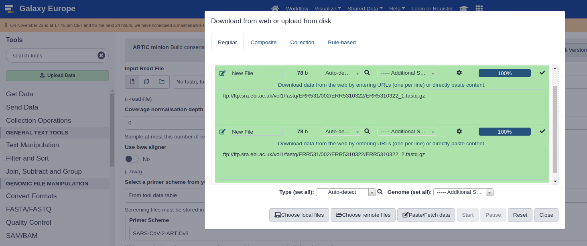
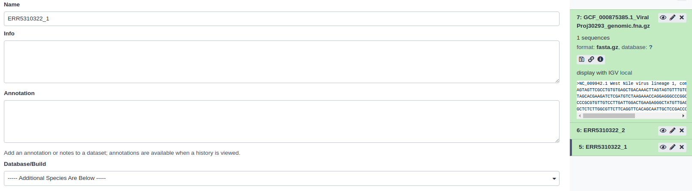
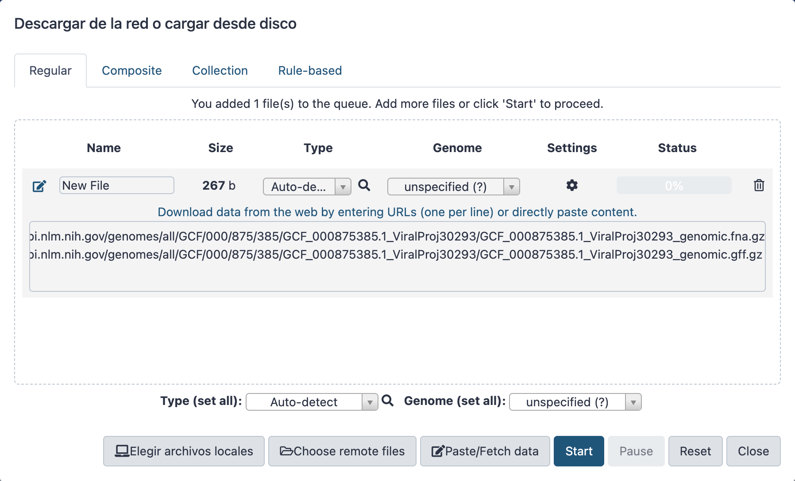
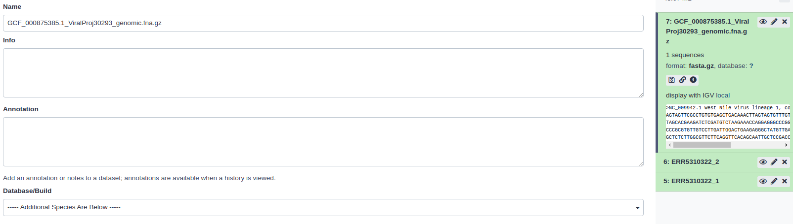
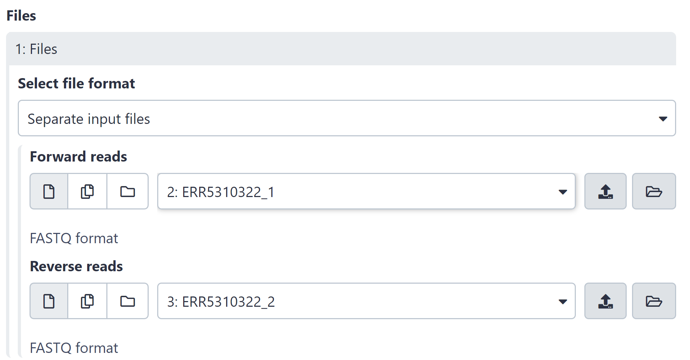
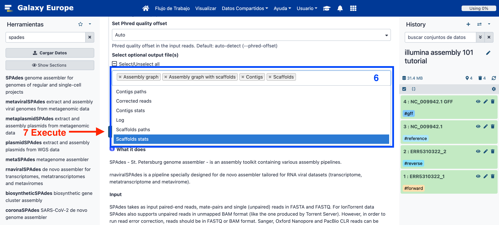
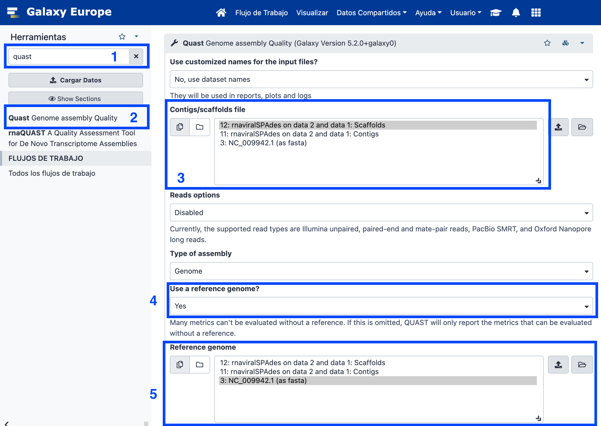
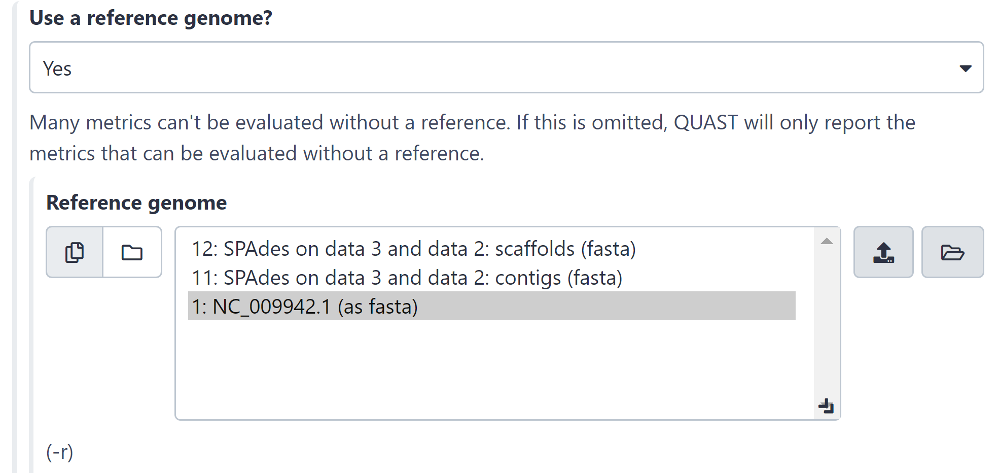

| Title | Galaxy |
|---|---|
| Training dataset: | PRJEB43037 - In August 2020, an outbreak of West Nile Virus affected 71 people with meningoencephalitis in Andalusia and 6 more people in Extremadura (south-west of Spain), causing a total of eight deaths. The virus belonged to the lineage 1 and was relatively similar to previous outbreaks occurred in the Mediterranean region. Here, we present a detailed analysis of the outbreak, including an extensive phylogenetic study. This is one of the outbreak samples. |
| Questions: |
|
| Objectives: |
|
| Estimated time: | 40 min |
Sometimes, we don't have a reference genome to map our reads against, or we want to reconstruct a genome without any possible bias caused by a reference. In such cases, we need to do a de novo assembly. This type of analysis tries to reconstruct the original genome without any templates, using only the reads themselves. Some considerations to consider beforehand:
ftp://ftp.sra.ebi.ac.uk/vol1/fastq/ERR531/002/ERR5310322/ERR5310322_1.fastq.gzftp://ftp.sra.ebi.ac.uk/vol1/fastq/ERR531/002/ERR5310322/ERR5310322_2.fastq.gz+ icon at the top of the history panel and create a new history with the name Illumina Assembly as explained here.ERR5310322_1 and ERR5310322_2

ERR5310322_1.fastq.gz.ERR5310322_1.
https://ftp.ncbi.nlm.nih.gov/genomes/all/GCF/000/875/385/GCF_000875385.1_ViralProj30293/GCF_000875385.1_ViralProj30293_genomic.fna.gz
https://ftp.ncbi.nlm.nih.gov/genomes/all/GCF/000/875/385/GCF_000875385.1_ViralProj30293/GCF_000875385.1_ViralProj30293_genomic.gff.gz

NC_009942.1.
Spades in the search tool box and select rnaviralSPAdes de novo assembler for transcriptomes, metatranscriptomes and metaviromes.[!WARNING] To be able to continue, it is necessary to first create a list of paired datasets, given our .fastq files, which will then be used for the rest of the steps of this workshop. In order to do so, we must:
- Select our fastqsanger.gz files that we uploaded in the beginning, and then click on 2 of X selected.
- Select Advanced Build List.
- Select the List of Paired Datasets box and click on Next.
- Check the auto-pairing configuration and click again on Next.
- Give a name to your list and finally click on Build.
Once this is done, you'll be able to select your list as input of SPAdes.


[!WARNING] Assembly takes time! There is no such thing as Assembly in real time. It can take anywhere between 90 minutes and two hours.
Questions:
Click on the eye icon in the history: Spades Contigs stats.
How many contigs have been assembled?
46


Run Tool.
Click on the eye icon of the QUAST HTML report.
Open the Icarus viewer in the quast report.
This training history is available at: https://usegalaxy.eu/u/s.varona/h/illumina-assembly-101-tutorial